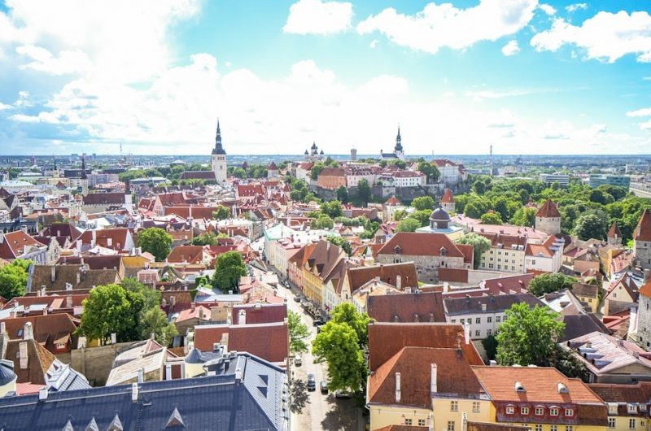
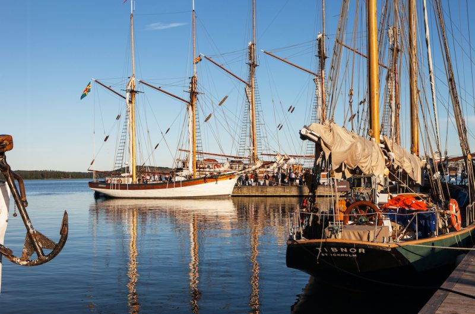

Tall Ships Races (TSR) arrangeres hvert år – hovedorganisasjonen er «Sail Training International» og har sitt tilhold i England.
TSR arrangeres hvert år og som regel går seilasene i Nordsjøen, Østersjøen og i Biscaya med anløp i forskjellige havner og land rundt disse havområdene.
Rotaryklubbene i Fredrikstad har en egen komite som arbeider med utsendelse av ungdom. Hvert år siden 2005 har denne komiteen sendt ut ungdom for deltakelse i TSR.
Komiteen sørger for transport til avreisestedet, sørger for plass på skutene og ordner transport tilbake til Fredrikstad.
Rotary dekker i all vesentlighet kostnadene, men beregner en mindre egenandel fra deltakeren.
Foto: Harry Johansson
Foto: Harry Johansson
Foto: Harry Johansson
Foto: Harry Johansson
Foto: Felix Falck-Næss
Foto: Felix Falck-Næss
Foto: Felix Falck-Næss
Foto: Ole W Moe Lund


Om Rotary
Hva er Rotary:
Rotary er en verdensomspennende serviceorganisasjon med ca 1,2 millioner medlemmer i ca 34.000 klubber i mer enn 200 land. Rotary ble etablert i 1905.
Rotarys formål:
Rotarys formål er å utvikle vennskap som grunnlag for å gagne andre samt bruke nettverket for å påvirke en høy etisk standard rundt alle forhold i arbeidslivet. I tillegg påvirker og bidrar til humanitært arbeid over hele verden.
Rotarys ungdomsarbeid:
Rotarys ungdomsarbeid er omfattende. Blant annet har vi utvekslingsprogrammer for studenter, vi arrangerer leirer for ungdom med deltakelse fra hele verden og vi arrangerer lederseminarer for ungdom. Her i Fredrikstad/Hvaler har klubbene slått seg sammen og arrangerer utsendelse av ungdom for deltakelse i Tall Ships Races.
Grunnen til at vi engasjerer oss i Tall Hips Races er at vi tror at det å arbeide sammen med å seile en stor seilskute bidrar til å etablere vennskap og forståelse for andre mennesker. Det etableres tillit og er et viktig bidrag i fredsarbeidet. Det er nok ikke for ingenting at organisasjonen Saltraining International ble foreslått til årets Nobels Fredspris i 2007.
Grunnen til at vi engasjerer oss i Tall Ships Races er at vi tror at det å arbeide sammen med å seile en
stor seilskute bidrar til å etablere vennskap og forståelse for andre mennesker. Det etableres tillit og
er et viktig bidrag i fredsarbeidet. Det er nok ikke for ingenting at organisasjonen Saltraining
International ble foreslått til årets Nobels Fredspris i 2007.
Tall Ships Races 2024
I år (2024) går Tall Ships Races i Østersjøen. Seilasen deles inn i 5 etapper.
Rotary skal i år sende ungdommer for deltakelse på etappen Tallinn i Estland til Turku – Se kart:
Til Tallinn ankommer man dagen før avreise 13.07.24
Tallinn,hovedstaden i Estland, ligger på den sørlige kysten av Finskebukta og er hjemsted for en av de best bevarte middelalderbyene i Europa,
som er anerkjent som UNESCOs verdensarvliste. Byen er Estlands politiske, økonomiske, kulturelle og pedagogiske sentrum og viste seg å være en uimotståelig attraksjon for Tall Ships Fleet i 2017 da over 44 skip valgte å besøke byen under Cruise-in-Company etappen av arrangementet.
Til Turku (Åbo) ankommer man 18.07.24. Ungdommene deltar på skutefesten før hjemreise.
Åbo ligger ved bredden av elven Aura, og var tidligere hovedstaden i Finland. Fartøyene skal reise på en spektakulær rute gjennom skjærgården, før de ankommer midt i byen. Tall Ships Races 2024 vil markere den sjette gangen at vertshavnen har tatt imot The Tall Ships Races siden 1996.
Seilasen er en kappseilas med de store skutene. Man spiser og sover om bord, i tillegg deltar ungdommene i selve seilingen av skuta. Alt fra å stå til rors, være utkikk og for de som selv ønsker det klatre i riggen for å sette og låre seil.
Kostnadene for den enkelte deltaker holdes i all vesentlighet av Rotary, men den enkelte må påregne en liten egenandel.
Les mer om The Tall Ships Races 2024 og på
windseeker
Påmelding
Deltakelse på dette arrangementet blir en opplevelse for livet. Du vil etablere vennskap med ungdom fra andre land.
Du får være med på noe du sannsynligvis ikke har gjort før og du vil oppleve folkefesten i to fantastiske byer på nært hold.
Ønsker du å delta, skriv litt om deg selv, så tar vi kontakt med deg.
Kontakt oss på denne mailen:
Email: tsrkomiteen@gmail.com
eller send melding til vår instagramkonto og facebook: